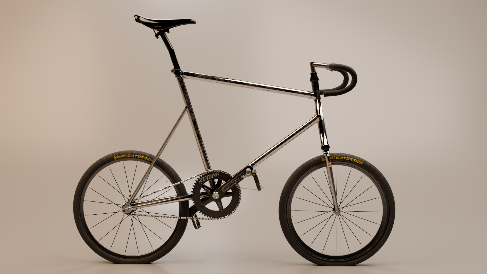
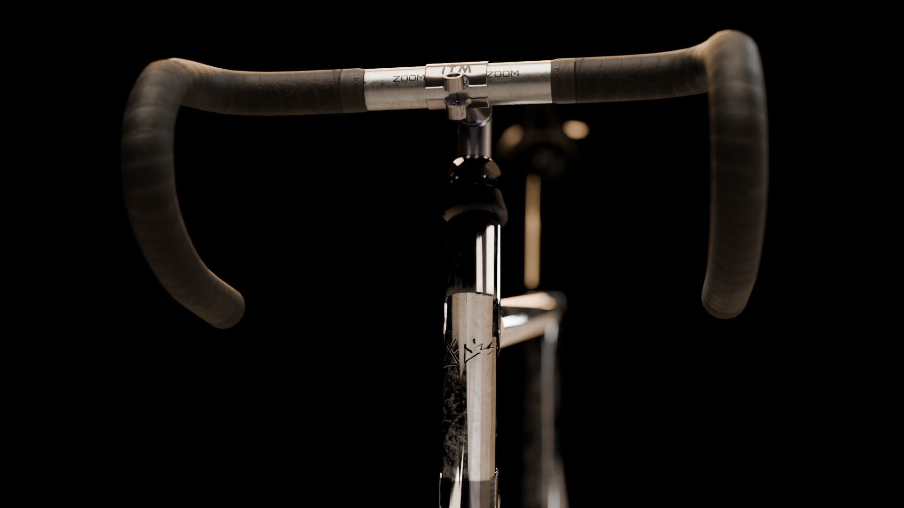
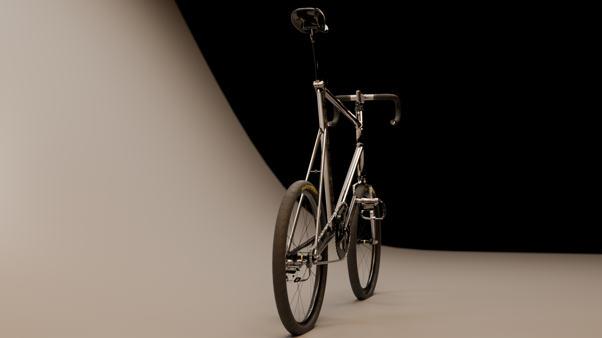
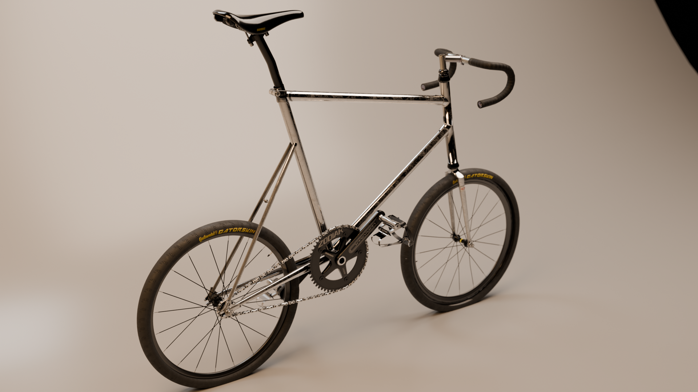

JA’ZS
super aggressive mini frame
fixed gear
portable for city commutes
20" wheels
PRE ORDER NOW
CURRENTLY ON HOLD; WAITING FOR NEW BATCH
A bicycle for: (i) zipping around traffic, (ii) picking up and literally carrying on public transport and (iii) being super aereo to help with the "hunch phone movement" of today's generation.



